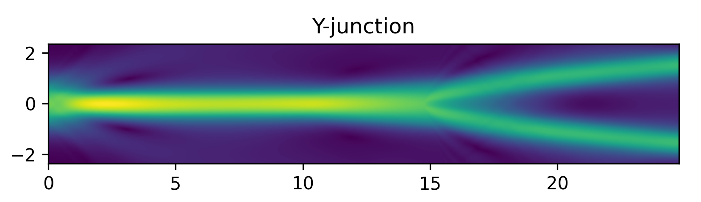
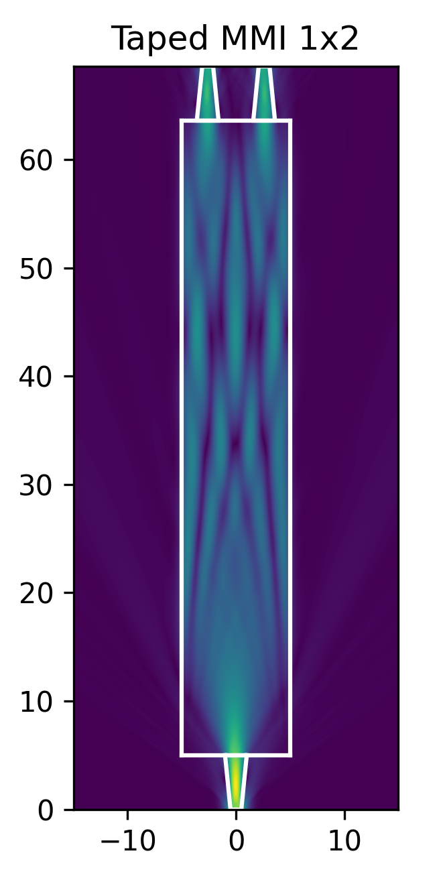

Метод распространяющегося пучка (Beam propogation method, BPM)¶
Метод распространяющегося пучка используется для расчета планарной задачи о распределении электромагнитного поля с помощью решения уравнения Гельмгольца. Метод конечных разностей позволяет дискретизировать задачу в пространстве с помощью равномерной прямоугольной сетки. Решается следующее уравнение
\[\frac{\partial^2 E}{\partial x^2} + \frac{\partial^2 E}{\partial y^2} + \beta E = 0\]
Использование метода распространяющегося пучка в difra¶
Примеры использования метода BPM находится в директории examples
case_name = "Y-junction"
bpm_params = generate_Y_junction_geometry(case_name)
E = fd_bpm(bpm_params)
vizualize_field(E, bpm_params, case_name)
Пример расчета напряженности электрического поля для Y-разветвителя:
Пример расчета напряженности электрического поля для многомодового интерферометра (miltumode interferometer)
{kind=link}
Литература¶
Kenji Kawano and Tsutomu Kitoh, “Introduction to optical waveguide analysis: Solving Maxwell’s equation and the Schrodinger equation,” John Wiley & Son, 2001